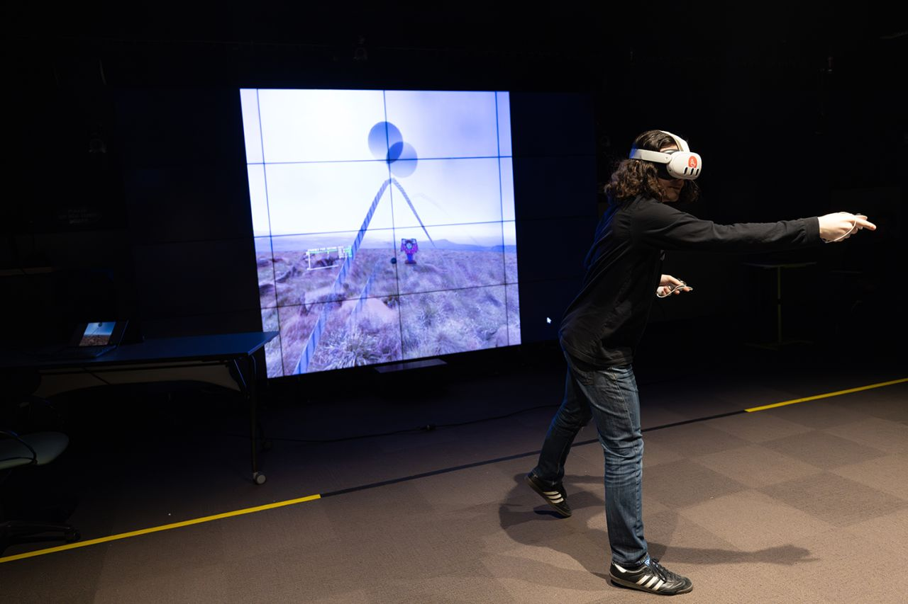
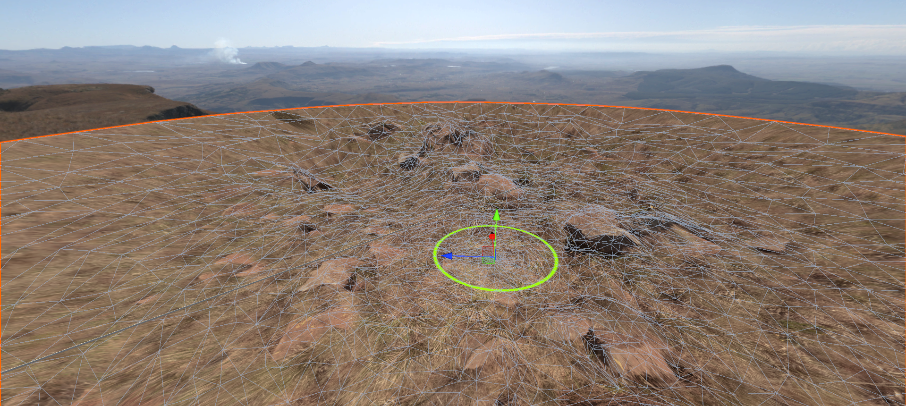

global game jam 2024
A clown-wrangling VR game made in 48 hours by a team of 3.


tl;dr
Made together with Jake White and George Takahashi using Unity, this is a game we call Learn the Ropes. I was responsible for the lasso mechanic and the environment using third party assets. Part of its namesake comes from its admittedly difficult technique-based gameplay. We built this game in 48 hours for Global Game Jam 2024 using Unity. The goal is to wrangle in antagonistic clowns with your trusty lasso.
lasso
I was responsible for the lasso mechanic using Obi Rope. You can't drop the lasso, but a custom physics constraint allows it to slip through your hands when you're not gripping it. This prevents you from dropping or losing the rope and lets you manipulate it with natural hand gestures.
The lasso's speed modulates the volume and pitch of a spatial 'swoosh' sound. This provides natural awareness of the rope's speed and position in lieu of force feedback, and its fun to hear it whiz around your head.
environment
The environment is made of two CC0 360 images from PolyHaven, one of which I projected onto a heavily modified mesh initially created using ZoeDepth to create the terrain. This gives the environment just enough depth to look convincing as long as you don't stray too far from the center (which you aren't supposed to do in the first place).
Because of how simple the environment is, the game renders at a crisp 3000x3000+ resolution, much higher than default.
download & source
You can download the game for Oculus Quest from Github or Global Game Jam. We have loose plans to develop the game further and support other platforms.
Completed early 2024